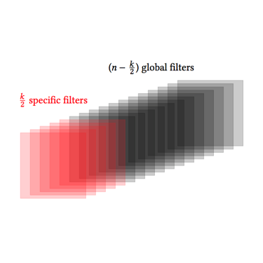
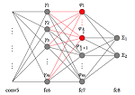

Quoc-Tuan Truong
I am a PhD candidate in School of Information Systems (SIS), Singapore Management University (SMU), advised by Prof. Hady W. Lauw, and working on Preferred.AI research project. My research interests include machine learning, text mining, and computer vision. Currently, I am focusing on problems of preference learning from textual and visual signals.
I obtained my Bachelor's Degree in Computer Science from University of Engineering and Technology (UET), Vietnam National University, Hanoi (VNU). My thesis was on developing a mobile Virtual Assistant for Vietnamese (VAV), advised by Prof. Xuan-Hieu Phan.
Besides, I am serving as an Intel Student Ambassador for Artificial Intelligence. I also had the fortune to be one of the ten Vietnamese recipients of the Honda Y-E-S Award in 2016.
More about my publications: DBLP or Google Scholar
Selected Publications
|
VistaNet: Visual Aspect Attention Network for Multimodal Sentiment Analysis
|
|
|
Visual Sentiment Analysis for Review Images with Item-Oriented and User-Oriented CNN
|
|
|
  |
We observe that the sentiment captured within an image may be affected by three factors: image factor, user factor, and item factor. Essentially, only the first factor had been taken into account by previous works on visual sentiment analysis. Thus, we develop item-oriented and user-oriented Convolutional Neural Networks (CNN) that better capture the interaction of image features with specific expressions of users or items. |
Last updated in Nov 2018.